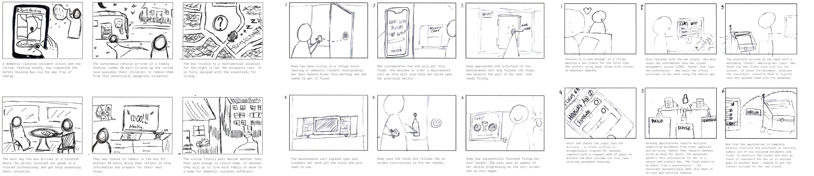
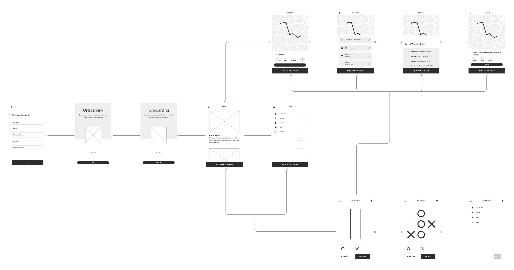
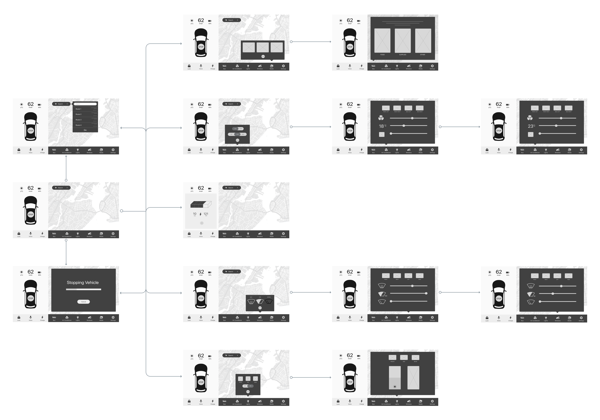

<!DOCTYPE html>
<html>

<head>
    <meta charset="utf-8">
    <meta name="viewport" content="width=device-width, initial-scale=1.0, shrink-to-fit=no">
    <title>Portfolio - ASH/title>
    <link rel="stylesheet" href="assets/bootstrap/css/bootstrap.min.css">
    <link rel="stylesheet" href="https://fonts.googleapis.com/css?family=Source+Sans+Pro:300,400,700,300italic,400italic,700italic">
    <link rel="stylesheet" href="assets/fonts/font-awesome.min.css">
    <link rel="stylesheet" href="assets/fonts/ionicons.min.css">
    <link rel="stylesheet" href="assets/fonts/line-awesome.min.css">
    <link rel="stylesheet" href="assets/fonts/material-icons.min.css">
    <link rel="stylesheet" href="assets/fonts/simple-line-icons.min.css">
    <link rel="stylesheet" href="https://fonts.googleapis.com/css?family=Josefin+Sans:100,300,400,700">
    <link rel="stylesheet" href="https://fonts.googleapis.com/css?family=Roboto:100,300,400,500,700">
    <link rel="stylesheet" href="assets/css/Home/#about.css">
    <link rel="stylesheet" href="assets/css/Home/Footer%20Styles.css">
    <link rel="stylesheet" href="assets/css/Home/Hero%20Styles.css">
    <link rel="stylesheet" href="assets/css/Home/Nav.css">
    <link rel="stylesheet" href="assets/css/Home/Portfolio.css">
    <link rel="stylesheet" href="assets/css/Home/resume.css">
    <link rel="stylesheet" href="assets/css/Portfolio/portfolios.css">
    <link rel="icon" type="image/png" href="/assets/img/icon/logo.png">
</head>

<body id="page-top"><a href="#" class="menu-toggle rounded"><i class="fa fa-bars"></i></a>
    <nav class="navbar navbar-light navbar-expand" id="sidebar-wrapper">
        <div class="container"><button class="navbar-toggler d-none" data-toggle="collapse" data-target="#"></button>
            <div class="collapse navbar-collapse">
                <ul class="nav navbar-nav sidebar-nav" id="sidebar-nav">
                    <li class="nav-item sidebar-nav-item" role="presentation"><a class="nav-link js-scroll-trigger" href="index.html">Home</a></li>
                    <li class="nav-item sidebar-nav-item" role="presentation"><a class="nav-link js-scroll-trigger" href="#about">About</a></li>
                    <li class="nav-item sidebar-nav-item" role="presentation"><a class="nav-link js-scroll-trigger" href="#portfolio">Portfolio</a></li>
                </ul>
            </div>
        </div>
    </nav>
    <header class="d-flex masthead" id="portfolio-masthead" style="height: 480px;background-image: url(&quot;assets/img/ASH-Hero.jpg&quot;);">
        <div class="container my-auto text-center" style="background-color: rgba(255,255,255,0.9);height: 135px;">
            <h1 class="mb-1" style="color: rgb(46,64,84);font-family: 'Josefin Sans', sans-serif;font-weight: 500!important;margin: 15px 0px 4px;">A.S.H.</h1>
            <h3 class="sub-heading" style="font-weight: 200;color: rgb(46,64,84);">Interaction Design Studio</h3>
            <div class="overlay"></div>
        </div>
    </header>
    <section id="process" class="content-section bg-primary text-white text-center" style="background-color: rgb(255,255,255)!important;">
        <div class="container">
            <div class="content-section-heading"></div>
            <div class="row">
                <div class="col-md-6 col-lg-3 mb-5 mb-lg-0"><span class="mx-auto service-icon rounded-circle mb-3" style="background-color: rgb(255,0,0);"><i class="la la-lightbulb-o" style="color: rgb(255,255,255);"></i></span>
                    <h4><strong style="color: #ff0000;font-family: Roboto, sans-serif;">Discover</strong></h4>
                    <p class="mb-0 text-faded" style="color: rgba(45,45,45,0.5);font-family: Roboto, sans-serif;">Research all potential topics assosciated to original brief</p>
                </div>
                <div class="col-md-6 col-lg-3 mb-5 mb-lg-0"><span class="mx-auto service-icon rounded-circle mb-3" style="background-color: rgb(255,0,0);color: rgb(255,255,255);"><i class="icon-book-open"></i></span>
                    <h4><strong style="color: rgb(255,0,0);font-family: Roboto, sans-serif;">Define</strong></h4>
                    <p class="mb-0 text-faded" style="color: rgba(45,45,45,0.5);">Deduce a final statement that summarises your aim</p>
                </div>
                <div class="col-md-6 col-lg-3 mb-5 mb-lg-0"><span class="mx-auto service-icon rounded-circle mb-3" style="background-color: rgb(255,0,0);color: rgb(255,255,255);"><i class="icon ion-hammer"></i></span>
                    <h4 style="color: rgb(255,0,0);"><strong style="font-family: Roboto, sans-serif;">Develop</strong></h4>
                    <p class="mb-0 text-faded"><span style="color: rgba(45,45,45,0.5);">Create as many solutions to the problem statement you can</span></p>
                </div>
                <div class="col-md-6 col-lg-3 mb-5 mb-lg-0"><span class="mx-auto service-icon rounded-circle mb-3" style="color: rgb(255,255,255);background-color: rgb(255,0,0);"><i class="icon-speech"></i></span>
                    <h4><strong style="color: rgb(255,0,0);font-family: Roboto, sans-serif;">Deliver</strong></h4>
                    <p class="mb-0 text-faded" style="color: rgba(45,45,45,0.5);">Present a final concept with potential for future iteration</p>
                </div>
            </div>
        </div>
    </section>
    <section id="Design-Process" class="content-section bg-light" style="background-color: #ffffff;background-size: cover;background-repeat: no-repeat;padding: 80px 0px;">
        <div class="container text-center">
            <div class="row">
                <div class="col-lg-10 mx-auto">
                    <h2 id="ethusiastic-title" style="font-family: Roboto, sans-serif;color: #2d2d2d;"><strong>Design Process</strong></h2>
                    <p class="text-center lead mb-5" id="design-process-ASH" style="color: rgb(45,45,45);height: 323px;font-family: Roboto, sans-serif;font-size: 13px;margin: 30px 0px 30px;">The A.S.H. design project was started in my second semester 2018 and is currently still progressing. The design breif outlined the need for autonomous vehicles to solve a real-world issue and so we sought to explore the way people
                        are going to interface with these future technologies to solve present problems. Shared intrigue lead us into the domain of domestic violence. We spoke with police officers, social workers, and case managers at specialised services
                        to gain an insider understanding and establish a research base to begin from. Our trio learned from the outset that this problem was incredibly multi-faceted, there are no ‘one size fits all’ solutions. Our research covered distinct
                        intersections of the issue with differing needs of an interface. To overcome complexity - we generated multiple concepts targeting these intersections, testing and evaluating several interface prototypes in an iterative process
                        to come to a similarly faceted solution.<br><br>We used our research to map out the actors in our domain and make sense of where their needs crossed, where technologies were used successfully and where they lacked proper implementation.
                        This began our brainstorming of ideas for a solution; we quickly became frustrated with our early concepts. The complexity lead us to solutions that were either too narrow or broad, after walking through them with our personas
                        we were unsatisfied with their originality.&nbsp;<br><br><br><br></p>
                    <div class="horizontal-scroll" style="background-image: url(&quot;assets/img/6-3-5.png&quot;);background-position: center;background-size: cover;background-repeat: no-repeat;"></div>
                </div>
            </div>
        </div>
    </section>
    <section id="Design-Process" class="content-section bg-light" style="background-color: #ffffff;background-size: cover;background-repeat: no-repeat;padding: 80px 0px;">
        <div class="container text-center">
            <div class="row">
                <div class="col-lg-10 mx-auto">
                    <p class="text-center lead mb-5" id="research-plan-ash_2" style="color: rgb(45,45,45);font-family: Roboto, sans-serif;font-size: 13px;margin: 30px 0px 30px;">We then flipped our approach and utilised some of the methods found in 'Design, Think, Make, Break, Repeat' (Tomitsch et. al 2017). Our group generated over 60 ideas using the Forced Association technique, pairing stakeholders with
                        technoloigies.&nbsp;We then regrouped with our ideas and looked at repeated trends in our thinking, carving down to a smaller set of solutions to map out. We each embodied our personas to discuss these and rule out the weakest
                        in a knock out process to come to a set of three concepts to explore.<br><br>Next, Brain-Writing 6-3-5 was used because&nbsp;We needed a way to get all of our competing ideas on product use cases and their features on paper so
                        we could understand the directions each member wanted to take. We liked the reflective aspect of building upon each others ideas and how the time constraint forced us to get it all out without thinking too hard on what wouldn’t
                        work. Each member had a piece of paper folded into sections with the chosen solutions at the top. Using a timer - we each wrote a feature, use case or scenario on each square and then rotated the sheets on the buzz, reflecting
                        and then building upon each others ideas. Once complete, we discussed the methods outcomes. Initially we had hoped to come out with two concepts to pursue, but they almost went too well and we ended up with three.<br><br><br><br><br><br><br></p>
                    <div
                        class="horizontal-scroll"></div>
                <p class="text-center lead mb-5" id="research-plan" style="color: rgb(45,45,45);height: 323px;font-family: Roboto, sans-serif;font-size: 13px;margin: 30px 0px 30px;">Armed with three different solutions, our next step was illustrating how they’d work in various scenarios. This was to give context to the interfaces they’d require and help us gather feedback from users both conceptually and in evaluation
                    of the interfaces themselves.&nbsp;We utilised the results of our brainwriting exercise to create fleshed out storyboards and early interface sketches. We then planned two methods for their evaluation: first were informal discussions
                    with peers and tutors on the validity of the design choices. This informed the transition from our rough sketches to paper prototypes to allow us to more formally evaluate the interfaces with our first round of think-aloud testing.<br><br></p>
                <div
                    class="horizontal-scroll" style="background-image: url(&quot;assets/img/wireframe_timelapse.gif&quot;);background-position: center;background-size: cover;background-repeat: no-repeat;"></div>
            <p class="text-center lead mb-5" id="final-paragraph" style="color: rgb(45,45,45);height: 323px;font-family: Roboto, sans-serif;font-size: 13px;margin: 30px 0px 30px;"><br>After culminating multiple sets of evaluation with hours of discussion and feedback: the strongest concept came to the fore.&nbsp;Initially we were wary of the secure housing bus - it was one of the first concepts we thought of, and it
                was seemingly a pedestrian approach to the problem. However - conceptually it made perfect sense to users. We enjoyed designing multiple interfaces for different contexts that worked in harmony. It also performed the strongest in the user
                evaluation, and after performing deeper secondary research we realised we could take our first thought concept and turn it into a laser focused, multi-faceted solution.<br><br><br>Our research revealed to us that women do not leave dangerous
                situations because of fear of repercussions from the police to either victim or partner, fear of the unknown or the safety of their children. Victims also rarely want to leave a situation - they just hope the violence will stop. It takes
                on average eight attempts to leave a violent relationship.<br><br>Police as the first responders to domestic violence brings with it inherent challenges. Women more often than not are unhappy with the way their cases are handled, particularly
                in the evidence captured by police, timeliness of responses, and the attitudes of first responding officers. Research suggest their approach could deepen distrust of services, reduce the likelihood of conviction and culturally reinforce
                an idea of “acceptable violence,” cyclically preventing instances of violence and creating cultures that aggravate the issue as whole (Wormer and Taylor, 2015).<br><br>ASH would provide a safe space for women unobstructed by police. Women
                would be more likely to seek help if this response was less aggressive - and we hope to explore ways ASH could actually help this evidence collection process and assist in the conviction of offenders while protecting those who need it.<br><br><br></p>
            <div
                class="horizontal-scroll"></div>
        <p class="text-center lead mb-5" id="research-plan" style="color: rgb(45,45,45);height: 323px;font-family: Roboto, sans-serif;font-size: 13px;margin: 30px 0px 30px;"><br><br>Our next steps are to continually refine our interface based on our feedback, make it a pleasure to use and bring it to life in a higher fidelity tool.&nbsp;<br><br>We also want to strengthen our secondary research &amp; explore more utility
            in the form of evidence collection and policing assistance, deepening ASH further.<br><br><br></p>
        <h5 style="font-family: Roboto, sans-serif;color: #2d2d2d;"><strong>Everyone’s experience of domestic violence is different. Whatever your situation, it is important to know that help and support is available</strong><br></h5>
        <h3 style="font-family: Roboto, sans-serif;color: #2d2d2d;">&nbsp;<br><strong>1800 RESPECT - 1800 737 732&nbsp;</strong><br><br></h3>
        </div>
        </div>
        </div>
    </section>
    <section id="portfolio" class="content-section" style="background-color: rgba(255,255,255,0.6);padding-top: 80px;">
        <div class="container">
            <div class="content-section-heading text-center">
                <h3 class="text-secondary mb-0" style="font-family: Roboto, sans-serif;color: rgba(45,45,45,0.6)!important;">Portfolio</h3>
                <h2 class="mb-5" style="font-family: Roboto, sans-serif;">Recent Projects</h2>
            </div>
            <div class="row no-gutters">
                <div class="col-lg-6">
                    <a href="TagMCA.html" class="portfolio-item">
                        <div class="caption">
                            <div class="caption-content">
                                <h2 style="font-family: Roboto, sans-serif;">Tag mca - UX Design Studio</h2>
                                <p class="mb-0" style="font-family: Roboto, sans-serif;font-size: 16px;">An experience based on primary user research to increase publice involvement at the MCA</p>
                            </div>
                        </div></a>
                </div>
                <div class="col-lg-6">
                    <a href="#page-top" class="portfolio-item">
                        <div class="caption">
                            <div class="caption-content">
                                <h2 style="font-family: Roboto, sans-serif;">ASH - Interaction Design Studio</h2>
                                <p class="mb-0" style="font-family: Roboto, sans-serif;font-size: 16px;">Designing interfaces focused on autonomous vehicles and their real-world applications</p>
                            </div>
                        </div></a>
                </div>
                <div class="col-lg-6">
                    <a href="SSiM.html" class="portfolio-item">
                        <div class="caption">
                            <div class="caption-content">
                                <h2 style="font-family: Roboto, sans-serif;">SSim - Clothing Co.</h2>
                                <p class="mb-0" style="font-family: Roboto, sans-serif;font-size: 16px;">An&nbsp;androgynous closthing brand, utilising minimalistic styles to create a new and unique urban style</p>
                            </div>
                        </div></a>
                </div>
                <div class="col-lg-6">
                    <a href="Illustrator.html" class="portfolio-item">
                        <div class="caption">
                            <div class="caption-content">
                                <h2 style="font-family: Roboto, sans-serif;">Designs</h2>
                                <p class="mb-0" style="font-size: 16px;">I love creating artworks using the Adobe suite, in particular Ai and Ps</p>
                            </div>
                        </div></a>
                </div>
            </div>
        </div>
    </section>
    <section class="content-section bg-primary text-white" style="background-color: rgb(255,0,0)!important;padding: 80px0px;">
        <div class="container text-center">
            <h2 class="mb-4" style="font-family: 'Josefin Sans', sans-serif;font-weight: normal;margin: 0px!important;">always happy to chat |<a href="mailto:nathan.judges@gmail.com" id="email"> nathan.judges@gmail.com</a></h2>
        </div>
    </section>
    <footer class="footer text-center">
        <div class="container">
            <ul class="list-inline mb-5">
                <li class="list-inline-item">&nbsp;<a target="_blank" rel="noopener noreferrer" href="https://www.linkedin.com/in/nathan-judges-06b77416a/" class="text-white social-link rounded-circle"><i class="icon-social-linkedin" style="color: rgb(255,0,0);"></i></a></li>
                <li class="list-inline-item">&nbsp;<a target="_blank" rel="noopener noreferrer" href="https://twitter.com/NathanJudges?lang=en" class="text-white social-link rounded-circle"><i class="icon-social-twitter" style="color: rgb(255,0,0);"></i></a></li>
                <li class="list-inline-item">&nbsp;<a target="_blank" rel="noopener noreferrer" href="https://www.instagram.com/nathan_judges/?hl=en" class="text-white social-link rounded-circle"><i class="icon-social-instagram" style="color: rgb(255,0,0);"></i></a></li>
                <li class="list-inline-item">&nbsp;<a target="_blank" rel="noopener noreferrer" href="https://dribbble.com/nathan_judges" class="text-white social-link rounded-circle"><i class="icon-social-dribbble" style="color: rgb(255,0,0);"></i></a></li>
            </ul>
        </div><a href="#page-top" class="js-scroll-trigger scroll-to-top rounded"><i class="fa fa-angle-up"></i></a></footer>
    <script src="assets/js/jquery.min.js"></script>
    <script src="assets/bootstrap/js/bootstrap.min.js"></script>
    <script src="https://cdnjs.cloudflare.com/ajax/libs/jquery-easing/1.4.1/jquery.easing.min.js"></script>
    <script src="assets/js/stylish-portfolio.js"></script>
</body>

</html>